<div class="textcontainer">
<p class="margin"> </p>
<h3>Week 6: Electronic Inputs + Final Project Progress</h3>
<ul>
<li><a href="#Capacitive">Capacitive Sensor</a></li>
<li><a href="#Thermistor">Thermistor</a></li>
<ul>
<li><a href="#finalproj1">Final Project Applications</a></li>
</ul>
<li><a href="#Hall_sensor + Final Project Applications">Hall Sensor + Final Project Applications</a></li>
<li><a href="#CNC">CAD Files for CNC Week</a></li>
</ul>
<h4 id="Capacitive"> Capacitive Sensor as a Way to Measure Short Distances<h4>
<p>This was the least interesting part of this week so I will be quick here. See below for the two sensors that will relate to my final project!</p>
<p>I made a simple capacitive sensor to measure distance by placing one capacitor against a wall (I used my box) and aligning the next capacitor along a ruler (making sure it is as parallel to the other capacitor as possible). I measured up to 7cm, one centimeter at a time (including also 0.5 and 1.5cm).
I made the code such that it made 5 measurements at each distance and then averaged them to get a more precise reading. So each data point you see in the plot is an average of five at the same distance.
A couple notes: 1) It seems as if the capacitors do not give accurate readings past 7cm (I tested more farther than that and the readings didn't change anymore), and 2) it took me too long to realize that I should not be touching the capacitor when I do measurements...</p>
<p> <p>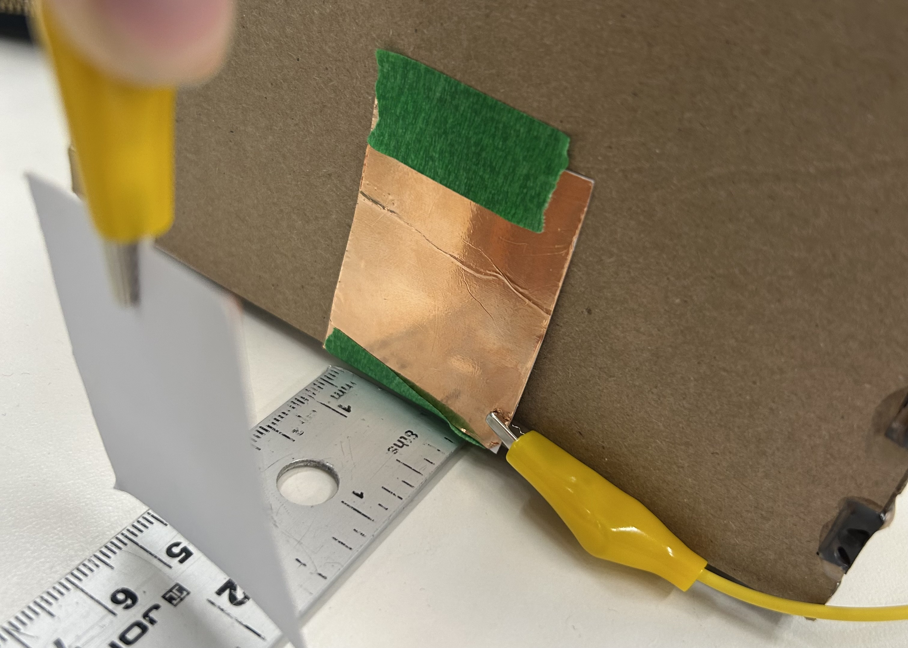</p> </p>
<p>Schematic drawing: </p>
<p> <p>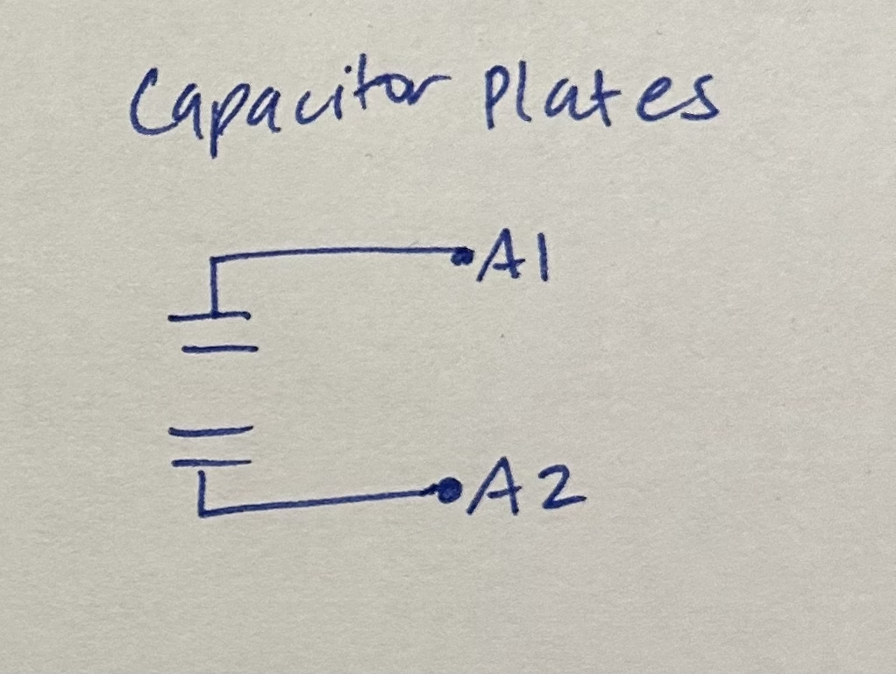</p> </p>
<p>Below is the calibration plot if we were to keep the data point at 7cm, assuming it was accurate. I used the cubic polynomial:
<math xmlns="http://www.w3.org/1998/Math/MathML" display="block"><mn>3.906703</mn><mi>e</mi><mo>-</mo><mn>13</mn><msup><mi>x</mi><mn>3</mn></msup><mo>-</mo><mn>9.990702</mn><mi>e</mi><mo>-</mo><mn>08</mn><msup><mi>x</mi><mn>2</mn></msup><mo>+</mo><mn>8.119424</mn><mi>e</mi><mo>-</mo><mn>03</mn><mi>x</mi><mo>-</mo><mn>2.038788</mn><mi>e</mi><mo>+</mo><mn>02.</mn></math>
In addition, I calibrated it without that outlier using an exponential:
<math xmlns="http://www.w3.org/1998/Math/MathML" display="block"><mn>0.45</mn><mo>+</mo><mn>1.34</mn><mspace width="0.16666667em"/><mi>exp</mi><mspace width="-0.16666667em"/><mrow><mo stretchy="true" form="prefix">(</mo><mrow><mo>-</mo><mn>1.65</mn><mo>×</mo><msup><mn>10</mn><mrow><mo>-</mo><mn>4</mn></mrow></msup><mo>(</mo><mi>x</mi><mo>-</mo><mn>91112</mn><mo>)</mo></mrow><mo stretchy="true" form="postfix">).</mo></mrow></math>
Both had very good
<math xmlns="http://www.w3.org/1998/Math/MathML" display="inline"><msup><mi>R</mi><mn>2</mn></msup></math>
values, indicating good fits. As you can see, neither were linear.</p>
<p> <p>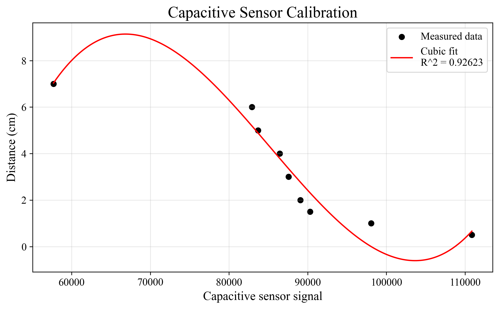</p>
<p>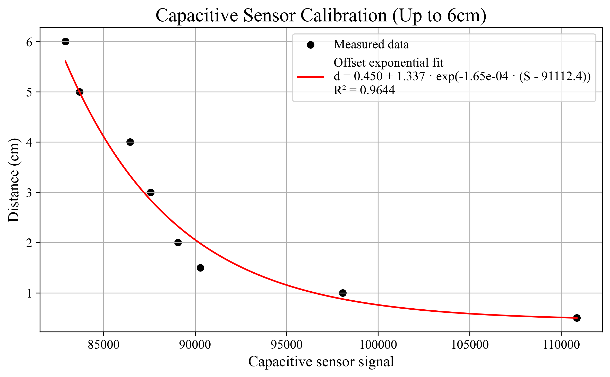</p> </p>
<p>I use the code from class, but changed the loop code. Here is the <code>loop()</code> function:</p>
<pre><code>void loop() {
if (Serial.available()) {
String cmd = Serial.readStringUntil('\n');
cmd.trim();
if (cmd == "read") {
int sum[] = {0, 0, 0, 0, 0};
for(int i=0; i < 5; i++){
sum[i]= tx_rx();
}
Serial.print("average: ");
Serial.println((sum[1]+sum[2]+sum[3]+sum[4]+sum[0])/5);
}
}
}
</code></pre>
<p> Download the full arduino code <a href="capacitance.ino" download = "capacitance.ino"> here.</a></p>
<h4 id="Thermistor">Thermistor Calibration + Servo Movement</h4>
<p> The next two sensors I will be using for my final project so I kept that in mind. First, I calibrated the thermistor. I did this by placing the thermistor against the bed of the 3D printer (and pressing it down with a plastic piece) since you can easily control the temperature of the bed.
I didn't want to use the toaster oven because I wanted to use lower temperatures. Exactly like for the capacitors, I made the code give me five measurements at each tempearture and then I averaged them.
I use a Steinhart-Hart fit following this equation (see good <math xmlns="http://www.w3.org/1998/Math/MathML" display="inline"><msup><mi>R</mi><mn>2</mn></msup></math>
):
<math xmlns="http://www.w3.org/1998/Math/MathML" display="block"><msub><mi>T</mi><mi>C</mi></msub><mo>=</mo><mfrac><mn>1</mn><mrow><mi>A</mi><mo>+</mo><mi>B</mi><mi>ln</mi><mo>(</mo><mi>R</mi><mo>)</mo><mo>+</mo><mi>C</mi><mo>(</mo><mi>ln</mi><mo>(</mo><mi>R</mi><mo>)</mo><msup><mo>)</mo><mn>3</mn></msup></mrow></mfrac><mo>-</mo><mn>273.15</mn></math>
</p>
<p><math xmlns="http://www.w3.org/1998/Math/MathML" display="block"><mi>A</mi><mo>=</mo><mo>-</mo><mn>3.7137430072</mn><mo>×</mo><msup><mn>10</mn><mrow><mo>-</mo><mn>3</mn></mrow></msup><mo>,</mo><mi>B</mi><mo>=</mo><mn>8.9534723142</mn><mo>×</mo><msup><mn>10</mn><mrow><mo>-</mo><mn>4</mn></mrow></msup><mo>,</mo><mi>C</mi><mo>=</mo><mo>-</mo><mn>1.6660535855</mn><mo>×</mo><msup><mn>10</mn><mrow><mo>-</mo><mn>6</mn></mrow></msup></math>
</p>
<p>Schematic drawing: </p>
<p> <p>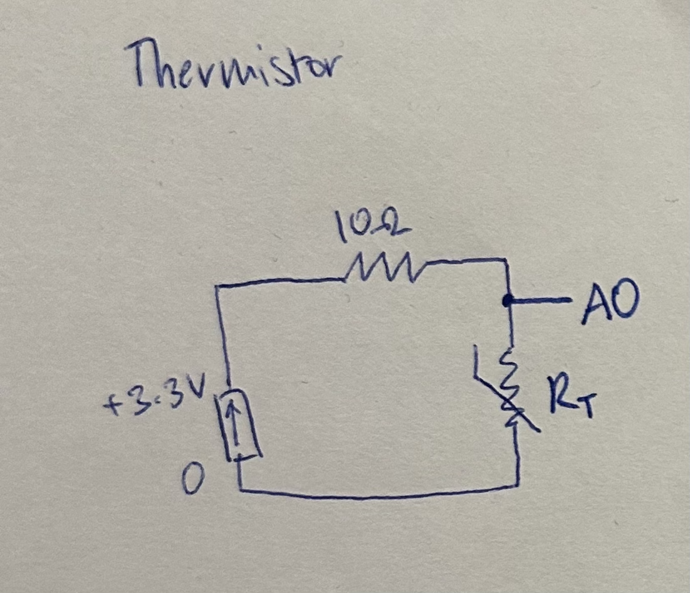</p> </p>
<p>Here is the calibration plot with the Steinhart-Hart fit:</p>
<p> <p>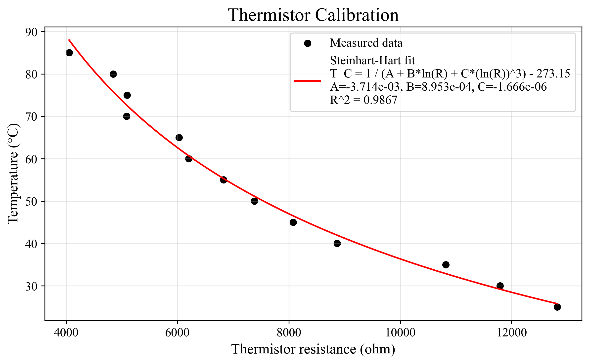</p> </p>
<p id="finalproj1">**Final Project Applications**</p>
<p>In my <a href="../13_finalproject/index.html">final project</a>, I will need to sense whether there has been a temperature change in the air around the glider, in order to detect a thermal.
So the actual exact temperature being measured is irrelevant. Rather, I care about a change in temperature. So in the code below, I track whether temperature has increased by 2 degrees, in which case I would move the servo one way (I arbitrarily picked a value).
If the temperature has decreased by 2 degrees, then I change the servo in the other direction by some arbitrary amount. In addition, I mark in the serial monitor whether or not a thermal has been detected or esacped from.
In the code, I keep the class's sample temperature calibration with the thermistor, but you'll see that it doesn't matter.</p>
<p> I also had some trouble as I was coding, so you'll see I added debugging functions that will print more things in the serial monitor so I can see what's happening.
Note that this is a part of a larger code I have that also includes the hall sensor, since my final project will include both. This is easily translatable to two servos, which I will need in my final project.
</p>
<p>Below is a snippet of my code, the measuring the temperature function <code>measureThermo()</code></p>
<pre><code>void measureThermo() {
float T, R2;
Vo = analogRead(ThermistorPin);
R2 = R1 * 1/(4095.0 / (float)Vo - 1.0);
T = (1.0 / (A + B*log(R2/R1) )); // Calculate temperature using datasheet formula.
T = T - 273.15; //Convert from Kelvin to Celcius.
// First time of the rus, set T_old to the current temprature
if (T_old == 0){
T_old = T;
return;
}
if (T - T_old > 2){
Serial.println("thermal detected");
servoMotor.write(150);
}
if (T_old - T > 2){
Serial.println("escaped thermal");
servoMotor.write(100);
}
if(debug_temp){
Serial.print("T_old: ");
Serial.print(T_old);
Serial.print("Current temp: ");
Serial.println(T);
}
T_old = T;
}
</code></pre>
<h4 id="Hall_sensor + Final Project Applications">Hall Sensor + Final Project Applications</h4>
<p>Finally, I experimented with the hall sensor. I didn't do any calibration here but rather prototyped its use in the final project.
As part of the project, I will measure wind surrounding the glider, so I will have a propellor attached to the tip of the fuselage.
To measure how quickly the propellor is moving and therefore how fast the wind is, I will place a small magnet on the propellor and then use the hall sensor to detect when the magnet passes by.
I think in the final project, I will create three to five degrees of wind speed, rather than finding a formula that maps onto any wind speed.
</p>
<p>Schematic drawing: </p>
<p> <p>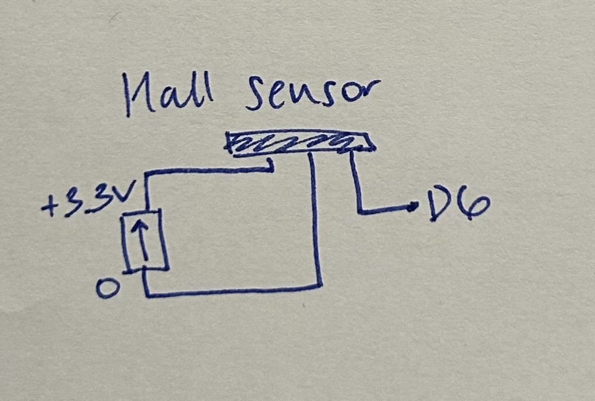</p> </p>
<p>In the <code>measureMagno()</code> function below, I take in three values of when the magnet detects a read below a certain threshold and find the time difference between the first and second read as well as the second and third, calculate the speed of the propellor, and then average the two speeds for a more accurate read.
I had trouble at the beginning where the code was never detecting anything beyond the first 3 reads but I fixed it by always rewriting the 2nd read to be the first, and the third to be the second, so that it continually rotates through and keeps the correct order of detections.
</p>
<pre><code>
void measureMagno() {
int threshold = 1500;
int sensorValue = analogRead(hallSensor);
if(debug_magno){
Serial.print("sensor value: ");
Serial.println(sensorValue);
}
// detect magnet passing
if(sensorValue < threshold && magnetDetected == false) {
magnetDetected = true;
// always update so that the most recent measurement is 2 and all the others cycle back
passTimes[0] = passTimes[1];
passTimes[1] = passTimes[2];
passTimes[2] = millis();
if(passTimes[0] != 0 && passTimes[1] != 0 && passTimes[2] != 0) {
//find speeds btwn 1 & 2 and 2&3
Serial.print(passTimes[0]);
Serial.print(" ");
Serial.print(passTimes[1] );
Serial.print(" ");
Serial.println(passTimes[2]);
float dt1 = (passTimes[1] - passTimes[0]) / 1000.0;
float dt2 = (passTimes[2] - passTimes[1]) / 1000.0;
float speed1 = 1.0 / dt1;
float speed2 = 1.0 / dt2;
//avg the two speeds
float avgSpeed = (speed1 + speed2) / 2.0;
Serial.print("Rotations per second: ");
Serial.println(avgSpeed);
}
}
</code></pre>
<p>I also designed and 3D printed a prototype of the propeller. I know the code works by just taking a magnet over the resistor a bunch of times.
Testing it with the propeller required me attaching the magnet to the underside of one of the propeller wings, but the magnet could be stronger and of course I wouldn't attach it with tape in the real thing.
I plan on redesigning it so that it is more aerodynamic (using some tutorial), and will mess around with different ways to attach it to the fuselage so that it can spin very smoothly.
I was initially thinking that I'll use the ball bearing but it didn't spin fast enough without friction. Still, that's what I started with and it worked for the initial run! I'll keep testing.
</p>
<p> <p>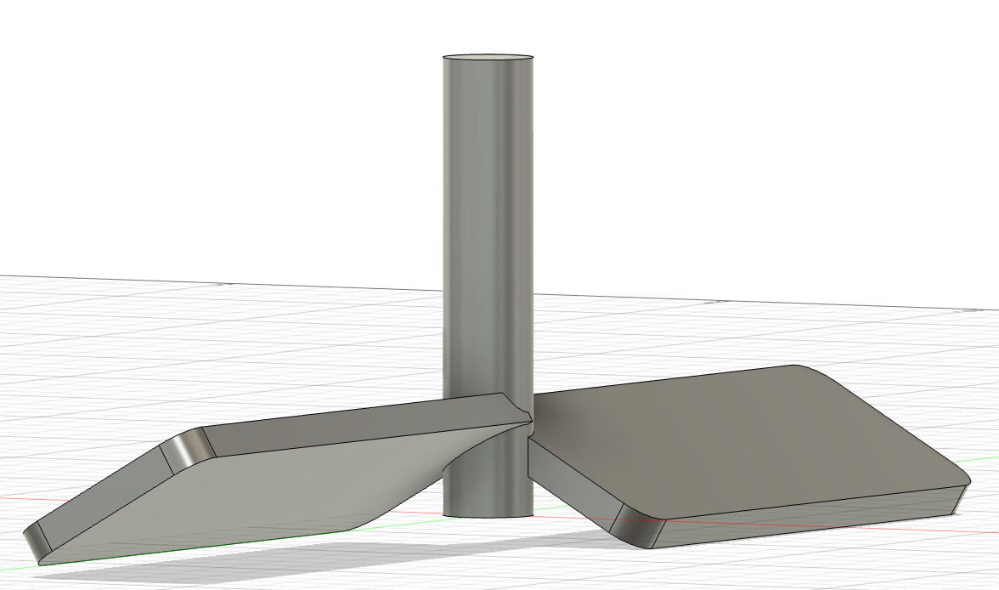</p></p>
<p><p>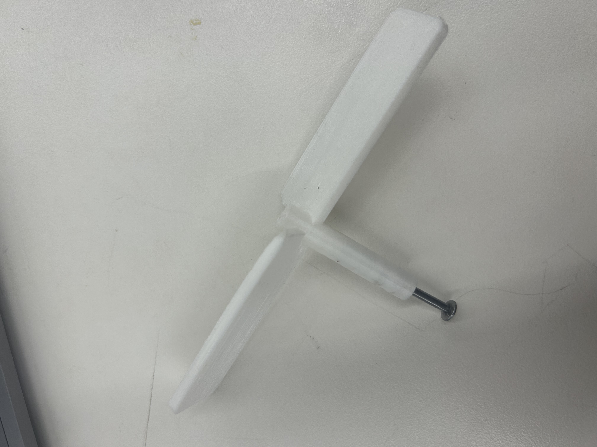</p>
<p>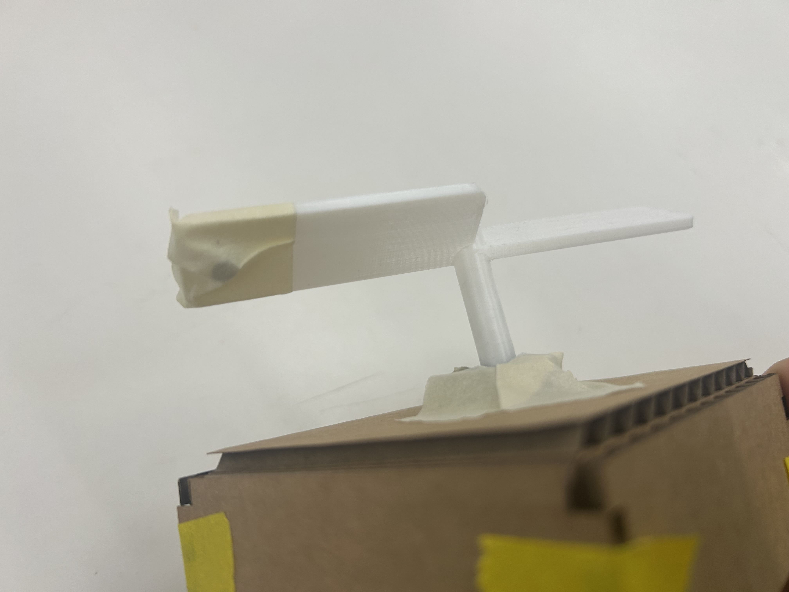</p></p>
See <a href="temp_wind_read.ino" download = "temp_wind_read.ino"> my full code</a> as of now that incorporates both the temperature and wind speed sensors.
<br><br>
<h4 id="CNC">CAD Files for CNC Week</h4>
<p> I made a 3D model of my entire glider (without wings) referencing the tutorials I link in my <a href="../13_finalproject/index.html">final project page</a>.
However, those videos didn't link the canvases for download so I used it as a guide for how to apply the canvas for a LARS glider below (<a href="lars_glider.png" download="lars_glider_canvas.png">download here</a>).
First time using forms! Took me a while to understand what was going on but eventually it worked.
For CNC week, I hope to make the fuselage (which is split down the middle into two bodies) since it could capture the airfoil properly.
</p>
<p> <p>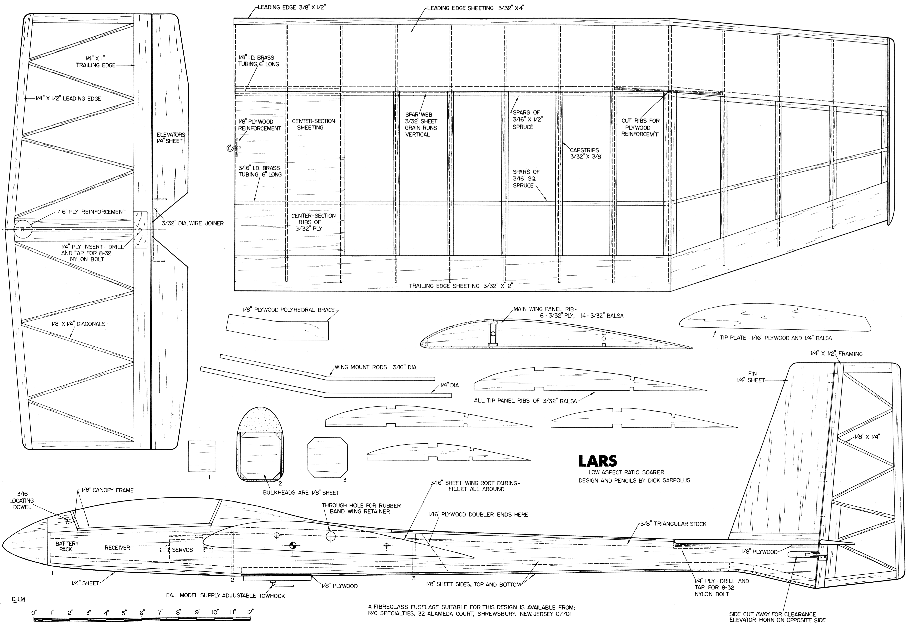</p>
<p>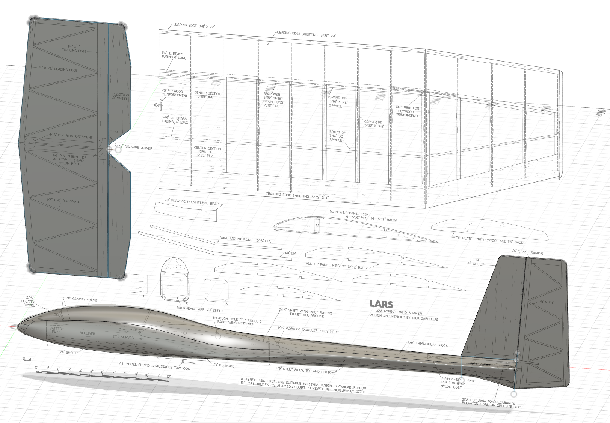</p> </p>
<p> Download the CAD & STL files: </p>
<ul>
<li><a href="lars_glider_CAD_files.zip" download="lars_glider_CAD_files.zip">Glider CAD + All Component STLs (.zip file)</a></li>
<li><a href="fuselage_1.stl" download="fuselage_1.stl">1st Half Fuselage STL</a></li>
<li><a href="fuselage_2.stl" download="fuselage_2.stl">2nd Half Fuselage STL</a></li>
</ul>
</div>